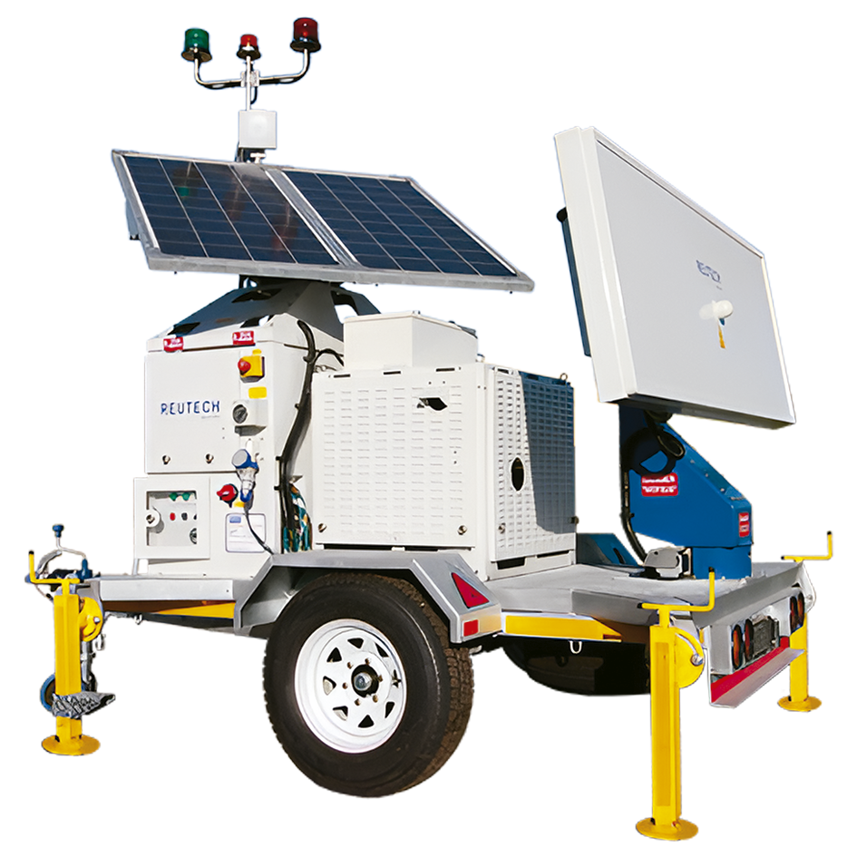
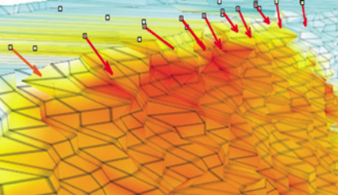

A Reutech Mining é uma empresa apaixonada, dedicada ao desenvolvimento e fabricação de tecnologias inovadoras para a gestão da segurança na indústria de mineração. Eles estão na vanguarda da inovação tecnológica para a segurança da mineração há mais de uma década. A empresa foi criada em 2006 após ser abordada por líderes da indústria de mineração para desenvolver soluções avançadas de monitoramento geotécnico.
Desde então, a empresa tem se concentrado em fornecer e melhorar a segurança em minas em tempo real para aplicações superficiais e subterrâneas, bem como contribuir para aumentos notáveis na produção de muitas minas em todo o mundo. A missão da empresa é compreender o ambiente de mineração e fornecer à indústria produtos de classe mundial.
Nosso objetivo é aumentar significativamente a segurança e a produtividade nas operações de mineração. Portanto, projetamos tecnologia de radar altamente complexa que simplesmente faz o que você precisa ter feito, o tempo todo. O resultado é um radar de monitoramento de estabilidade de taludes que tem o que é preciso para levá-lo até lá. Esse é opoder da segurança e produtividade através da precisão e confiabilidade.
O Movement and Surveying Radar (MSR) é o radar de monitoramento de inclinação mineira mais avançada do mundo para avaliar a estabilidade das paredes das minas, barragens de rejeitos e perigos naturais. Com a capacidade única de extrair múltiplos pontos de dados de uma única antena, o MSR fornece uma nuvem de pontos tridimensionais de alta resolução sem depender de mecanismos externos. Isto significa que você obtém a mais precisa percepção da estabilidade da inclinação o tempo todo. Dado que é capaz de cobrir áreas amplas rapidamente, e Radar MSR é a ferramenta definitiva para realizar monitoramento estratégico e tático em qualquer escala e sob quaisquer condições.
Os blocos de construção modulares e atualizáveis da solução MSR destinam-se a evoluir com suas exigências operacionais e orçamentárias. O Módulo Radar é o núcleo da solução e pode ser fornecido com uma variedade de opções de potência e montagem.
Implementação patenteada sem níveis, dentro de 15° em reboques padrão ou múltiplos,
veículos ou instalações fixas.
Fornecimento externo de eletricidade, bateria, gerador e/ou energia solar.
Com o mais alto espaçamento de pontos de dados tridimensionais do mercado, a solução MSR oferece qualidade e detalhe de movimento inigualável.
Uma nuvem de pontos auto-gerada fornece dados em alcance, azimute e elevação sem depender de mecanismos externos. Isto significa que o MSR também pode ser usado para o monitoramento ou levantamento pontual de aterros sanitários e barragens de rejeitos.
Sub-milimétrica
O MSR cobre amplas áreas em apenas alguns minutos, tornando-o o sistema de radar de varredura mais rápido em termos de cobertura e alcance. Os dados de radar juntamente com os vetores de movimento dos prismas e extensômetros são exibidos na mesma interface.
O resultado é identificar rapidamente as mudanças nas condições de inclinação e tomar decisões mais bem informadas. De qualquer lugar do mundo. Em tempo real.
Leica GeoMos, Trimble 4D, QuickSlope e SlideMinder.
